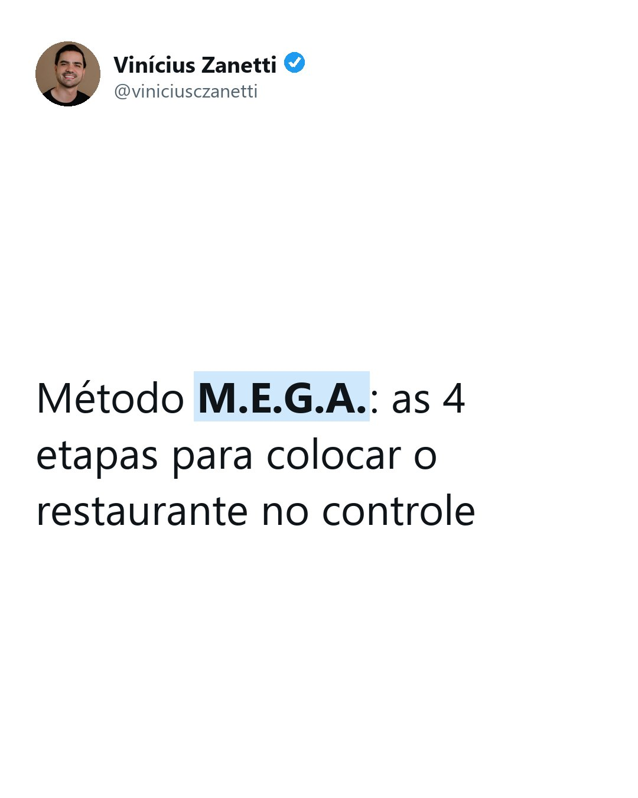

Método M.E.G.A.: por que a gestão do restaurante começa pelo mapa, e não pela solução
O método do livro Restaurante no Controle divide a gestão em quatro etapas que só funcionam em sequência. Veja o que cada uma faz, o que entrega e onde o dono costuma pular etapa.
Publicado em 16/11/2026
Fila na porta e mês no vermelho. Avaliação cinco estrelas e fornecedor sem pagamento. Catorze horas de trabalho por dia e nenhuma certeza, no fim do mês, de que o negócio deu lucro. É com esse retrato que o consultor Vinícius Zanetti abre o livro Restaurante no Controle, e a explicação que ele dá é uma só: falta de gestão estruturada.
A resposta do livro é o Método M.E.G.A., usado pela Zatti com os clientes. São quatro etapas, Mapeia, Estrutura, Garante e Acompanha, e a regra principal não está em nenhuma delas isoladamente. Está na ordem.

O que é o Método M.E.G.A.?
É um método de gestão feito para bares e restaurantes, construído, segundo o livro, a partir de problemas observados dentro de restaurantes reais. Cada letra é uma etapa. Mapeia entende onde o negócio está. Estrutura organiza as bases financeiras e operacionais. Garante faz o que foi organizado virar rotina. Acompanha lê os números todo mês e ajusta a rota.
O livro insiste que não se trata de uma lista de boas práticas nem de um pacote de planilhas. Não é ferramenta. É sequência.
"A maioria dos restaurantes não quebra por falta de clientes. Quebra por falta de estrutura."Vinícius Zanetti, no capítulo O Método M.E.G.A. do livro Restaurante no Controle
Por que a ordem das etapas importa?
Porque cada etapa depende da anterior para funcionar. O livro resume assim: não é possível estruturar o que não foi mapeado, não é possível garantir o que não foi estruturado e não faz sentido acompanhar o que não foi implementado.
Na prática, o erro mais comum é começar pelo meio. O dono sente que o dinheiro não sobra e corre para cortar custo, trocar fornecedor ou subir preço. Sem saber qual é o CMV de verdade, qual é o custo fixo e quanto precisa faturar, ele corta o que aparece, não o que pesa. A tabela mostra o que acontece quando uma etapa é pulada.
| Etapa pulada | O que acontece |
|---|---|
| Mapeia | A mudança é feita no chute: corta-se o que incomoda, não o que custa |
| Estrutura | Não há DRE, ficha técnica nem processo para a equipe seguir |
| Garante | A ficha técnica fica na pasta e o checklist ninguém preenche |
| Acompanha | A melhoria dura alguns meses e o restaurante volta ao improviso |
Etapa 1: o que o Mapeia levanta?
O Mapeia é o diagnóstico. Antes de qualquer mudança, o restaurante precisa saber quais são os números reais, onde estão as perdas e o que funciona. O livro divide o levantamento em cinco frentes: modelo de negócio, mercado, finanças, operação e marketing.
Na parte financeira entram o CMV por categoria, o custo fixo total, a margem de contribuição e o ponto de equilíbrio. Na operacional, como são feitas as compras, como o estoque é controlado e se a ficha técnica existe e é seguida. No cardápio, o livro usa a matriz que cruza venda e margem de cada item.
No blog, se encaixam aqui: quanto o restaurante precisa faturar para não perder dinheiro, o erro de calcular o CMV pelas compras do mês, a conta que decide qual lanche tirar do cardápio e onde está o dinheiro quando o mês é bom e o boleto não fecha.
Etapa 2: o que se organiza no Estrutura?
Com o diagnóstico na mão, começa a construção. O livro chama o Estrutura de a etapa mais trabalhosa e mais transformadora, e a divide em quatro blocos: gestão financeira, controle de CMV, organização operacional e marketing.
- Gestão financeira: fluxo de caixa, plano de contas e DRE gerencial, para saber quanto entra, quanto sai e quanto sobra.
- Controle de CMV: ficha técnica, controle de estoque e compras padronizadas.
- Organização operacional: preparo padronizado, checklists de abertura e fechamento e rotinas com horário e responsável.
- Marketing: proposta de valor clara e canais escolhidos de acordo com o momento do restaurante.
No blog: como montar a DRE gerencial do restaurante, o fator de correção que muda o custo do frango, a ficha técnica do reaproveitamento, como padronizar o porcionamento e quanto comprar de cada insumo.
Etapa 3: o que o Garante faz na prática?
Aqui o plano vira rotina. O livro é direto: estrutura sem implementação não muda nada. Fluxo de caixa que ninguém alimenta não serve, e ficha técnica que o cozinheiro não conhece não protege a margem.
"Um checklist que a equipe ignora não garante padrão."Vinícius Zanetti, no capítulo Garante do livro Restaurante no Controle
O Garante tem quatro movimentos. Treinar a equipe mostrando o processo, executando junto e só então soltando, e explicando o porquê. Implantar rotinas diárias, semanais e mensais. Dar a cada processo um responsável com nome, e não "a equipe". E verificar se o processo continua sendo seguido. Quando não está, a resposta do livro não é punição. É diagnóstico: falta de treino ou processo mal desenhado.
No blog: a reunião semanal que mapeia o erro mais caro da semana.
Etapa 4: o que o dono acompanha todo mês?
O Acompanha transforma o trabalho em sistema permanente. A base é a gestão por indicadores, e o livro cita a recomendação de acompanhar de cinco a nove deles ao mesmo tempo. Os principais são faturamento lido com contexto, CMV, margem de contribuição, ticket médio e desempenho de marketing.
O critério para escolher indicador é simples: ele precisa ter relação com o faturamento ou com a margem. Dado que não orienta decisão não entra no painel. Um exemplo do livro: se o CMV subiu dois pontos percentuais, o dono investiga antes de o problema crescer.
No blog: o que a diferença entre CMV teórico e CMV real revela, os 5 números para olhar toda segunda e por que o cupom no delivery derruba o ticket médio.
O ciclo termina no Acompanha?
Não. Depois do Acompanha, o método volta ao Mapeia, mas num nível acima. A segunda rodada não parte do zero: o restaurante já tem números organizados, rotina rodando e uma equipe que opera com mais autonomia. É nessa volta que aparecem as melhorias que antes estavam escondidas debaixo do improviso.
O que o dono de hamburgueria e pizzaria faz com isso
O primeiro passo é resistir à vontade de resolver tudo de uma vez. Antes de trocar fornecedor ou mexer no preço, o dono precisa de três números: o CMV calculado com inventário, o custo fixo do mês e o faturamento que paga essa conta. Sem eles, qualquer corte é aposta.
O segundo é escolher um bloco do Estrutura por vez. Na hamburgueria, a ficha técnica dos lanches mais vendidos costuma ser o começo, porque carne, queijo, pão e embalagem são a maior parte do custo. Na pizzaria, a porção de queijo e de cobertura por tamanho.
O terceiro é colocar dia e responsável em cada rotina. Inventário no último dia do mês, DRE fechada até uma data fixa, conversa semanal sobre o que deu errado. Rotina sem data vira intenção.
Perguntas frequentes
O que significa M.E.G.A.?
São as iniciais das quatro etapas do método: Mapeia, Estrutura, Garante e Acompanha. O método está no livro Restaurante no Controle, de Vinícius Zanetti, e é usado pela Zatti com os clientes.
Por onde começar a organizar um restaurante pequeno?
Pelo diagnóstico. Antes de cortar custo ou mudar preço, o dono precisa saber o CMV real, o custo fixo do mês e quanto precisa faturar para pagar as contas. É o que a etapa Mapeia levanta.
Posso pular direto para o controle de custos?
Pode, mas o risco é cortar o que aparece e não o que pesa. Sem mapa, a mudança é chute. E sem as etapas Garante e Acompanha, a melhoria costuma durar só alguns meses.
Quantos indicadores o dono deve acompanhar?
O livro cita a recomendação de cinco a nove indicadores ao mesmo tempo, como faturamento, CMV, margem de contribuição, ticket médio e marketing. Só entra o que tem relação com o faturamento ou com a margem.
Fontes
- Vinícius Zanetti, Restaurante no Controle: Método M.E.G.A. de gestão para restaurantes (Belo Horizonte, 2026).